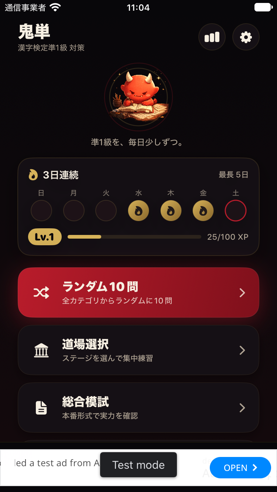
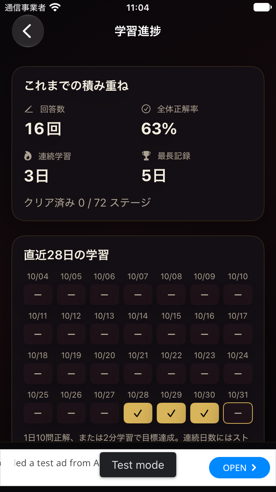
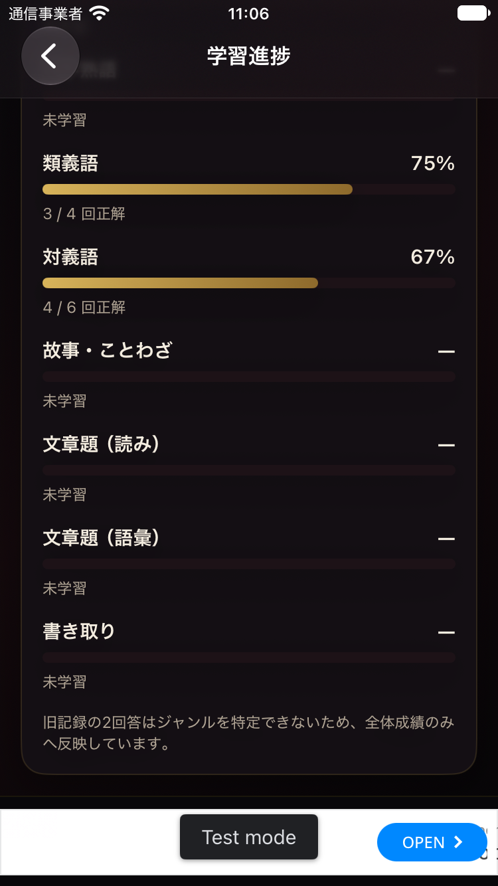
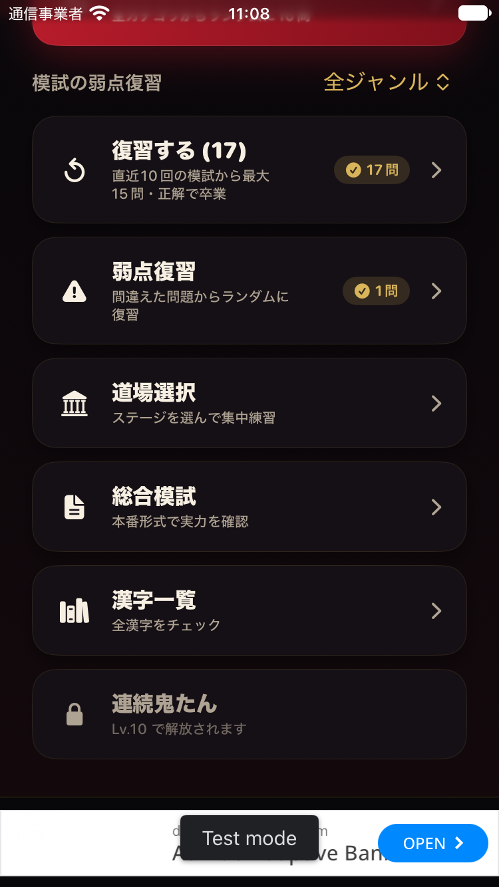
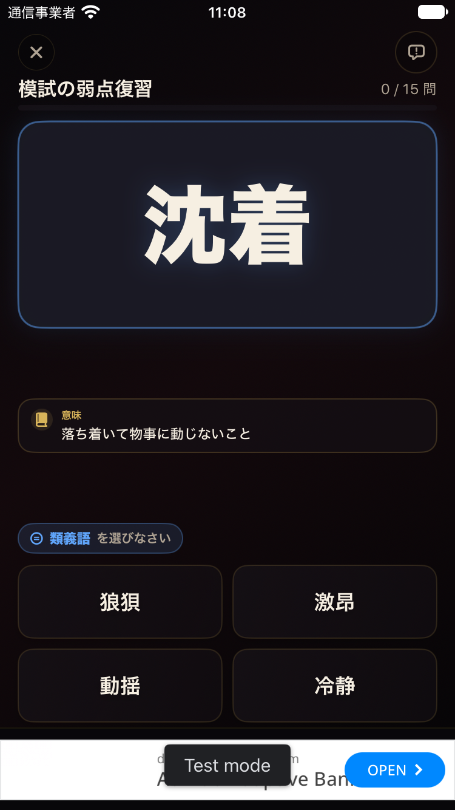
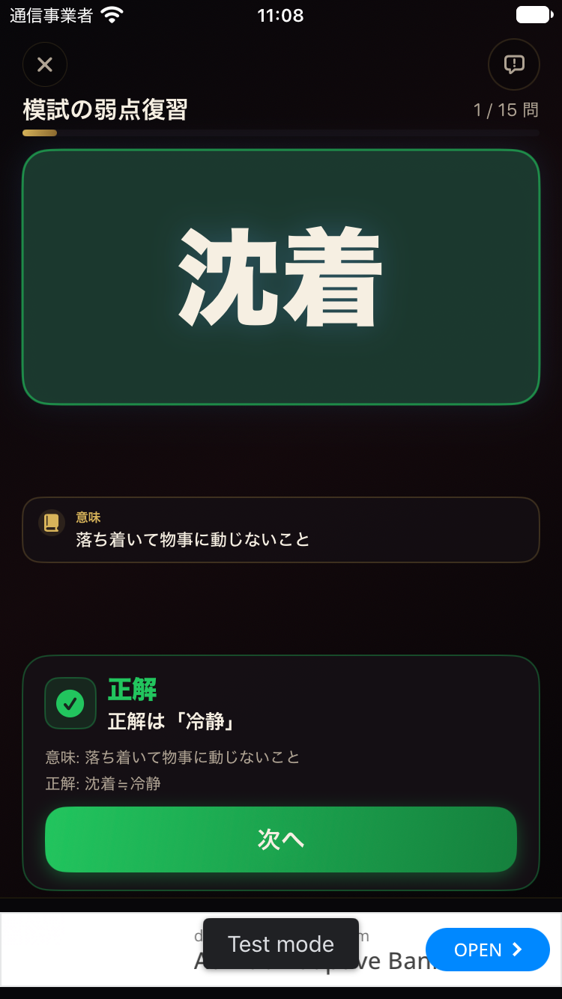
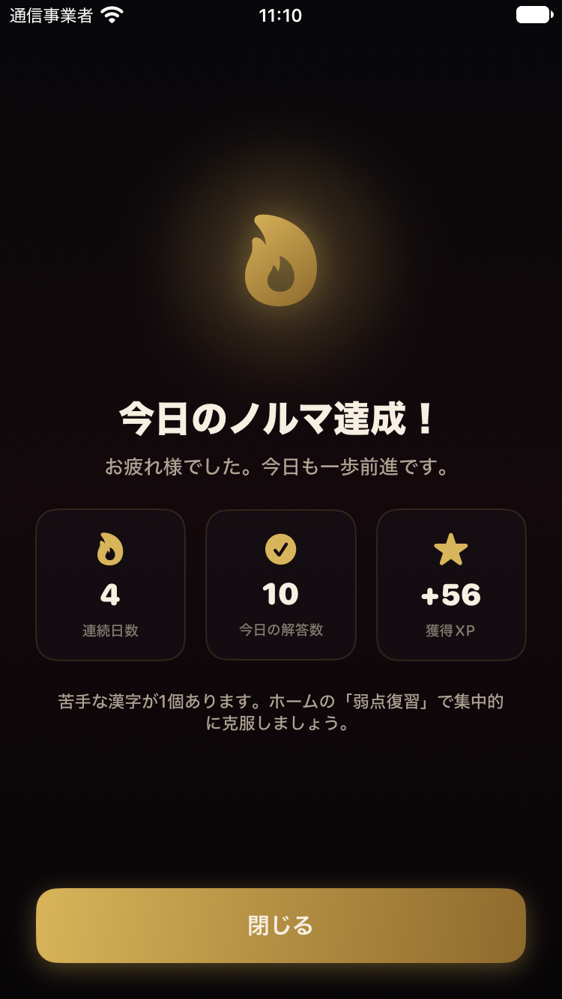
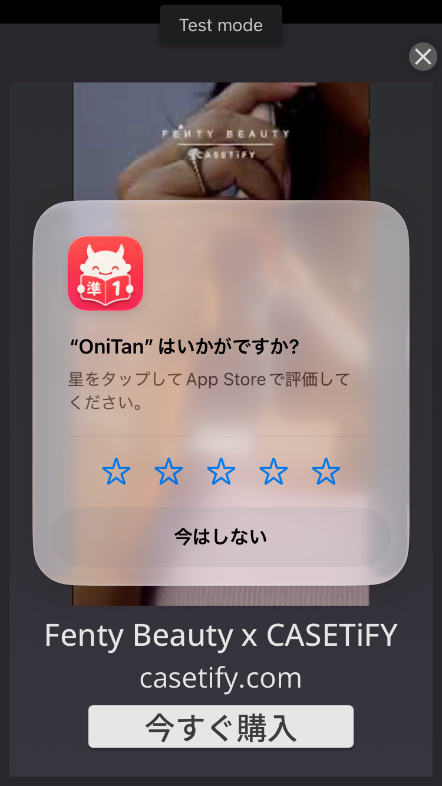
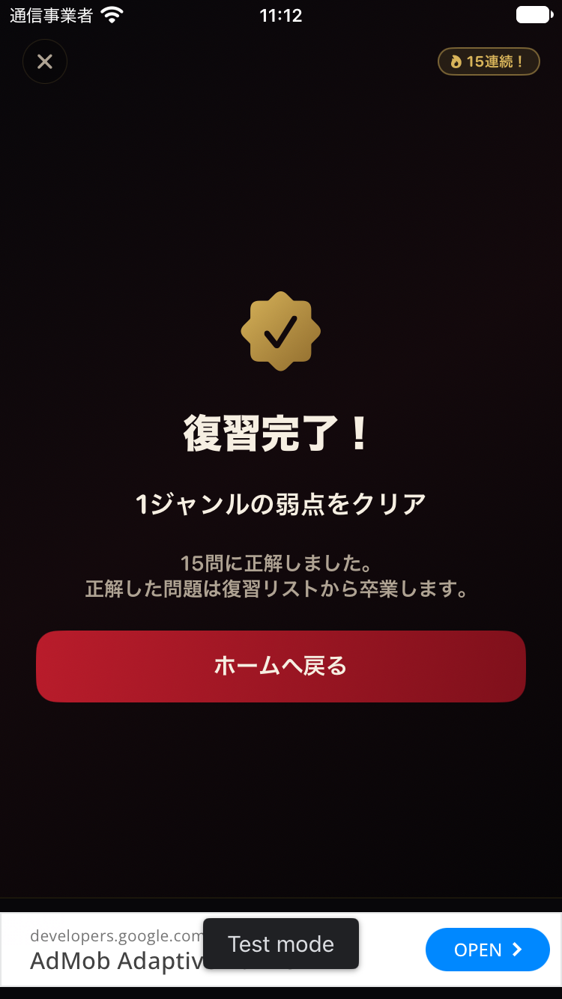
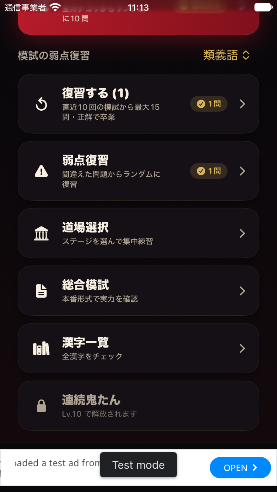

対象: ホーム→学習進捗→ジャンル別成績、ホーム→模試の弱点復習→結果。
目的: 苦手を見つけ、迷わず適切な復習を始め、結果を正しく理解できるか。
環境: iPhone SE（第3世代）、iOS 27.0、ダーク表示、標準文字サイズ。監査専用シミュレーターの検証データを使用。コード品質・採点・保存処理は評価対象外。アプリのソースは変更していない。
1. ホーム【要改善】— 学習進捗は名称のない小さなグラフアイコンだけ。マスコットと継続状況が多くの高さを占め、学習状態を確認する導線は目立たない。
2. 学習進捗の初期表示【要改善】— 累計指標と28日カレンダーだけで初期表示が埋まり、ジャンル別の成績は見えない。
3. ジャンル別成績【要改善】— 読み50%、類義語75%、対義語67%という検証用の成績。未学習の行にも同等の高さを使い、取り組んだジャンルの比較を妨げる。行に練習・復習の導線がなく、画面を戻ってジャンルを探し直す必要がある。



- 日付、補足文、正解数は小さく、暗い背景に抑えた色を使用。主役の数値との差が大きく、根拠となる分母を読み落としやすい。コントラスト比は未測定なので基準違反とは断定しない。
- カレンダーの当日枠はあるが、見える範囲に「今日」の文字や凡例がない。日付を探して意味を推測する必要がある。
- アクセシビリティツリーでは正解率と正解数・回答数の読み上げラベルを確認できる。VoiceOverを実際にオンにした連続操作やフォーカス順、文字サイズ拡大、ライト表示は未検証。
- 主たるクイズ開始ボタンは視覚的に明確。
- 未学習は「—／未学習」であり、回答済み0%と区別できる。
- カレンダーの達成日はチェックマークがあり、色だけに依存しない。
実ユーザーによる発見時間や離脱率は計測していない。観察に基づくUXリスクとして評価する。
根拠: Step 7・8。15問セットの10問目に正解した直後、全画面の「今日のノルマ達成！」が回答の説明を覆った。閉じるまで次へ進めない。15問終了時は結果画面が一度出た後、App Store評価依頼と動画広告が重なった。
影響: 集中と達成感が途切れ、結果確認より先に閉じる操作を要求される。
改善: 学習中の目標達成は小さな非モーダル表示にし、詳細はセッション終了後にまとめる。結果確認前に広告や評価依頼を重ねない。評価依頼と広告は同じタイミングで出さない。
注意: 広告はテスト配信。OSの評価依頼・広告の再現頻度は表示条件に依存する。今回の実操作で同時表示を確認した。
根拠: Step 9・10。類義語16問＋対義語1問の未復習状態から15問を実施。全問が類義語で、結果は「1ジャンルの弱点をクリア」。ホームに戻って類義語を選ぶと、まだ1問残っていた。
影響: 表示が実際より広い達成を約束し、学習状況の理解を誤らせる。残件数は結果に出ず、続きへ直接進めない。
改善: 「今回15問を復習できました」「未復習あと2問」と、今回の成果と全体の残りを分ける。「残りを復習する」を追加する。
根拠: Step 4・10。「模試の弱点復習／復習する (17)」と「弱点復習／間違えた問題からランダムに復習」が並ぶ。後者の出題元は説明されない。件数バッジには両方とも完了を連想させるチェックが使われる。
影響: どちらを選ぶか、片方を終えたらもう片方はどうなるかをユーザーが推測する必要がある。
改善: 入口を「復習」にまとめ、内部で「すべて／模試／道場」を選べるようにする。分ける場合も「模試の間違い」「道場の間違い」と対象を明示する。残件は「未復習17問」、開始ボタンは「15問復習する」と分ける。
根拠: Step 3。各ジャンルは数値と棒グラフだけで、練習や復習へのボタンがない。未学習の行も同じ大きさで並び、成績があるジャンルの比較を妨げる。
影響: 読み50%を見つけても、戻って道場や復習を探し直す必要がある。観察と次の学習が分断される。
改善: 成績のあるジャンルを上にまとめ、苦手順に表示。行から「このジャンルを練習」へ進める。未学習ジャンルは別のまとまりにする。
根拠: Step 5の画面は「0 / 15問」だが、今回取得したアクセシビリティツリーのラベルは「模試の弱点復習 0問中15問正解」。6問終了時にも「6問中15問正解」、10問時にも「10問中15問正解」となった。
影響: 読み上げ情報に頼ると、全体数と正解数の関係が逆になり、進み具合を理解しにくい。
改善: 「全15問中、0問正解」のように順序を統一する。
限界: ラベル値は確認したが、VoiceOverを有効にした実際の読み上げ・連続操作までは検証していない。
根拠: Step 1・2。ホームにも進捗画面にも連続日数があり、進捗画面の初期表示は累計とカレンダーで埋まる。ジャンル別正解率はスクロールしないと見えない。入口は無記名のグラフアイコンのみ。
影響: 「苦手を把握する」という目的に到達するまでの探索が長い。
改善: 進捗画面の上部に苦手なジャンルと推奨練習を置き、カレンダーはその後へ。ホームには「成績を見る」という文字の導線を用意する。
根拠: Step 2・3。4回答の75%を強調し、全期間の割合だけが出る。目標値や最近の変化は示されず、未分類回答の説明は一覧の末尾。母数や補足は主数値より小さく低い視覚的優先度。
影響: 少ない回答の割合を習熟度と誤認しやすく、改善したか・どこまで取り組めばよいかが分からない。
改善: 「4回答・参考値」のように母数を率の近くで示す。対象期間を明示し、段階的に直近成績と比較できるようにする。未分類を含むという注記は全体正解率の近くへ移す。

17件の入口から15問セットが始まる。画面上部は0/15問。アクセシビリティツリーは「0問中15問正解」。

「正解」の文字・チェック・色で結果を伝え、次へ進む操作は明確。ただし対象語の意味が中央と説明欄で繰り返され、要点の密度は低い。

15問セットの途中で全画面の達成表示に切り替わった。「閉じる」で元の回答説明に復帰できた。

結果が表示された直後に広告と評価依頼が重なった。評価は投稿せず「今はしない」で閉じ、広告も閉じた。

「1ジャンルの弱点をクリア」と出るが、今回のセット以外の残件を示さない。次の操作はホームへ戻るだけ。

全ジャンルでは2問残っていた。類義語を選ぶと1問が残り、「ジャンルの弱点をクリア」という先の表示と食い違って受け取られる。

最初にF1の割り込みを整理する。続いてF2・F3で復習の対象と達成の意味を一貫させ、F4・F6で「苦手の発見→練習」の導線をつなぐ。F5の読み上げラベルは同じ改善作業で修正する。
今回の監査ではアプリのソースを変更していない。保存した画像はすべて今回の監査で撮影し、端末画面の状態を確認して採用したもの。評価依頼・広告のため結果と異なる画面になった最初の候補画像は採用していない。